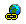
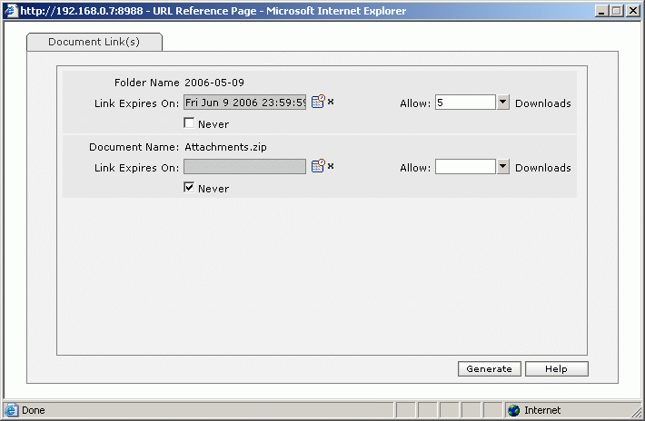
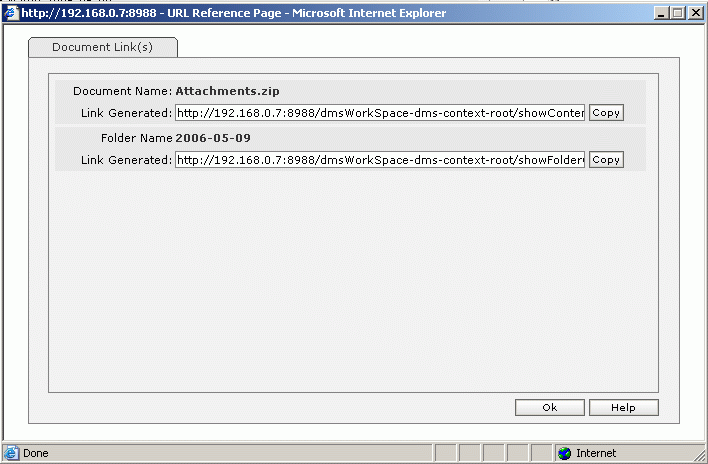

| How to generate links for selected folders/documents?
|
- In Folder/Document List select the items for whom links are to be generated.
- Click on the generate link(s) icon [  ] or select from menu: File ->Generate Link(s).
|
|
|

|
|
- For every item selected, there are 3 options,which are explained below .
- Link Expires On: Select the date on which this item's link will be rendered ineffective in displaying it's contents.
It is assumed that the link will then expire at 23:59:59 on the selected date.
- Allow [] Downloads: An editable dropdown that will enable you to set the numeric limit for the item's link expiry.
- Never: .Select this so that the link generated for this item will never expire.
- After specifying the desired options for each selected item, press "Generate" button so that the respective links are generated.
|
|
|

|
- Respective Item Name (Folder Name or Document Name) and Link Generated are displayed.
- A link for a document would display the it's content whereas, a link for a folder would display a list of immediate documents in it enabling the user to download them one by one.
- A copy button next to each document link facilitates copying corresponding link to clipboard (available in Internet Explorer only).
- Users can then paste the copied link on the browser addressbar to view contents.
- Users can forward these links to recipients who can then access the respective items.
- The user himself can click on the document names to ensure that links are generated correctly.
- Press "Ok" to close widow.
|